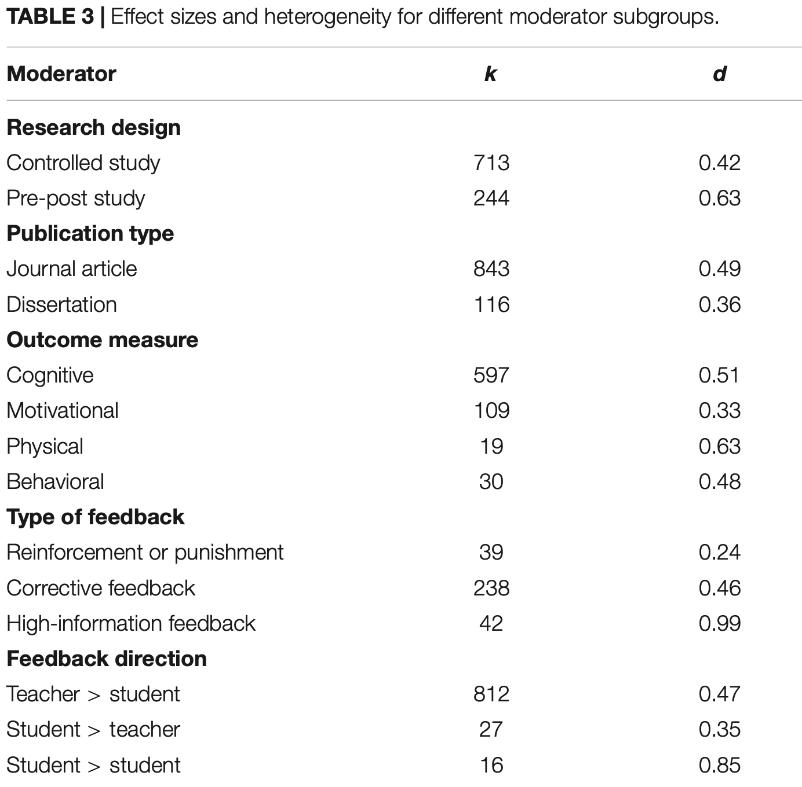

The Power of Feedback Revisited
The Power of Feedback Revisited: A Meta-Analysis of Educational Feedback Research
Wisniewski, B., Zierer, K., & Hattie, J. (2020). The Power of Feedback Revisited: A Meta-Analysis of Educational Feedback Research. Frontiers in Psychology, 10.
What it says
- In a meta-analysis of more than 400 research studies looking at the effects of feedback on student learning, the authors call attention to some ways in which feedback may be more or less effective. The key findings are found in the Table excerpt shown below.
- Feedback is a tremendously broad concept that is taken to include any information given to a student about their performance or understanding. Overwhelmingly, feedback comes from a teacher to a student (although in the limited times where is was formally studied, student–student feedback was highly effective).
- A key point in the authors' review is the "cognitive complexity" of the feedback. They divide this into three categories. The least complex, "task level feedback", relates to how well a task was done. Next is "process level feedback", which relates to things like the strategy used in completing a task. So "how" you did something rather than just whether you did it correctly. Finally the most complex is "self-regulation feedback". This relates to things like metacognition, how and why the student chose the strategy they did, if/how they decided if the strategy was effective, or whether they recognized when they understood something. One weakness in the analysis, however, is that they weren't able to analyze the published studies by this same three way categorization. Instead, they grouped the studies into ones employing reinforcement or punishment, corrective feedback, or "high-information" feedback. These categories relate to the prior three, but their definition of corrective feedback leaves some uncertainty as to how much, if any, process level feedback is used. High-information feedback is defined as corrective feedback that also included some aspect of self-regulation feedback.

Estimates of effect sizes for selected moderator variables where k is the number of study effects (some studies have multiple measured effects) and d is the effect size. (Excerpt from Table 3 from Wisniewski et al.).
What we might learn from it
- The results with respect to feedback type are quite interesting. Reinforcement or punishment feedback has rather low impact on student outcomes. Corrective feedback, even without the self-regulation-related detail is more valuable (roughly double that of reinforcement or punishment). Finally "high-information" feedback is even more effective (again roughly double that of corrective feedback). Some caution is warranted on the exact quantitative impact of the high-information feedback, since there were relatively fewer studies exploring that approach, but it is almost certain that the basic result is true: that students will learn more and more quickly when teachers provide detailed feedback that not only addresses task performance, but also engages with the process and self-regulation dimensions where appropriate.